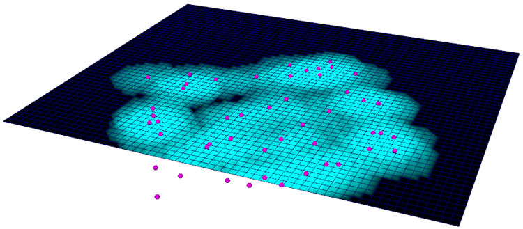
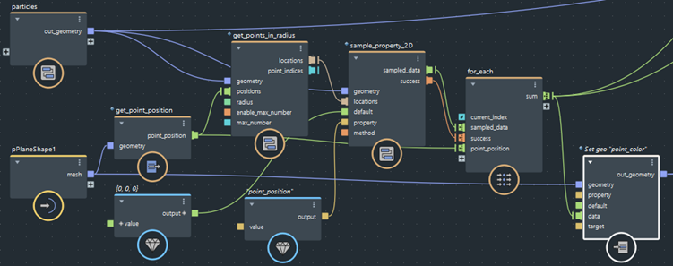

使用 get_points_in_radius 节点返回几何体上位于以每个输入定位为中心的球体内的点的索引。然后，可以使用点索引访问几何体上的特性值。

在上面的示例中，查询将针对平面网格的每个顶点返回某一半径范围内的粒子。粒子数用于计算基于距离的衰减权重，结果用于设置逐顶点颜色。
要查找半径内的点，然后访问特性值，请执行以下操作：
将 get_points_in_radius 节点添加到图表中。
将要查找其点的对象连接到 geometry 输入。
将球体中心的定位连接到 positions 输入。
设置所需的 radius。
根据需要，设置 enable_max_number 和 max_number。这可用于防止针对每个定位返回大量点，例如在密集几何体或大半径的情况下。启用后，仅返回最近点，并受设定的最大数量的限制。
使用 get_closest_point 节点的输出以访问几何体上的特性值。输出是二维数组，即数组中的每个元素是与每个位置的最近点对应的另一个数组。
locations 输出数组进行采样，请将其连接到一个或多个 sample_property_2D 节点。此节点类似于 sample_property（请参见对位置的几何特性进行采样），但适用于位置的二维数组。结果将是值的二维数组，您可能需要在下游计算中进行循环。locations 或 indices 数组上循环。在循环内部，您可以使用 array_size 来确定每个位置找到的点数（如果有）。